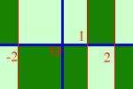
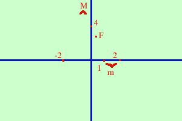
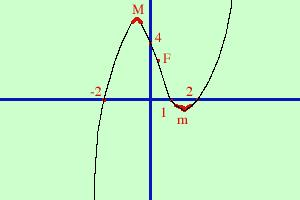

Ti conviene porre la finestra sullo schermo al
massimo
Studiare la funzione:
y = x3 -
x2- 4x + 4
Per questa come per le altre funzioni cercheremo di utilizzare il
maggior numero
possibile di punti dello studio.
- Determinazione del Campo di esistenza
Il campo di esistenza e' tutto l'asse reale:
C.E. {x  R} R}
- Determinazione del tipo di funzione
E' una funzione di tipo polinomiale
Non e' ne' pari ne' dispari ne' periodica
- Intersezione con gli assi
Faccio il sistema tra la funzione e l'asse delle x
 y = x3 -
x2- 4x + 4
y = x3 -
x2- 4x + 4
y = 0
x3 -
x2- 4x + 4= 0
y = 0
Per risolvere l'equazione di terzo grado scompongo il polinomio
associato
x3 -
x2- 4x + 4 = (x - 1)(x - 2)(x + 2)
(x - 1)(x - 2)(x + 2)= 0
y = 0
Un prodotto e' zero quando uno dei fattori e' zero quindi pongo ognuno
dei fattori uguali a zero
x - 1 = 0
y = 0
x = 1
y = 0
prima soluzione
x - 2 = 0
y = 0
x = 2
y = 0
seconda soluzione
x + 2 = 0
y = 0
x = -2
y = 0
terza soluzione
ho tre punti di intersezione con l'asse delle x:
A( -2 , 0) B( 1 , 0) C( 2 , 0 )
Faccio il sistema tra la funzione e l'asse delle y
y = x3 -
x2- 4x + 4
x = 0
ad x sostituisco zero quindi la y sara' uguale al temine noto
y = 4
x = 0
Il punto di intersezione con l'asse y e'
D( 0 , 4 )
- Valori agli estremi del campo di esistenza
Essendo il campo di esistenza tutto R questo punto potrebbe
essere saltato, comunque, per completezza, vediamo i valori a
meno infinito e a piu'infinito
-
limx->-
 (x3 -
x2- 4x + 4) = -
(x3 -
x2- 4x + 4) = -
-
limx->+
(x3 -
x2- 4x + 4) = +
Quindi la funzione inizia a sinistra
da meno infinito e sparisce a destra a piu' infinito
- Positivita' e negativita'
dobbiamo trovare i valori per cui la funzione e' maggiore di
zero
x3 -
x2- 4x + 4
 0 0
sostituisco alla funzione la scomposizione trovata prima
(x - 1)(x - 2)(x + 2)
0
faccio il sistema
x - 1 0
x - 2 0
x + 2 0
x 1
x 2
x -2
faccio lo schema
x 1
- - - - - - - - - - - - - - (1) + + + + + + + + + + + + + +
x 2
- - - - - - - - - - - - - - - - - - - - - - - - (2) + + + + + + +
x -2
- - - - (-2) + + + + + + + + + + + + + + + + + + + + +
f(x)0
- - - - (-2) + + + + + (1) - - - - - - - - (2) + + + + + + +
da meno infinito a meno 2 la funzione e' negativa

tra meno 2 ed 1 la funzione e' positiva
tra 1 e 2 la funzione e' negativa
da 2 a piu' infinito la funzione e' positiva
Nello schema a fianco ho segnato in verde scuro le zone che non
contengono la funzione
- Determinazione degli asintoti
Non esistono asintoti verticali perche' la funzione non ha
punti di discontinuita' (il campo di esistenza e' tutto R)
Non esistono asintoti orizzontali perche' per x tendente
all'infinito la funzione tende ad infinito
Non esistono asintoti obliqui perche' la funzione e' di terzo
grado e quindi non puo' essere approssimata mediante una retta
- Determinazione della derivata prima
faccio la derivata di
y = x3 -
x2- 4x + 4
y' = 3x2- 2x - 4
- Crescenza e decrescenza
pongo la derivata prima maggiore di zero per trovare le
zone ove la funzione e' crescente
3x2- 2x - 4
0
equazione associata
3x2- 2x - 4 = 0
risolvo (formula ridotta)
-(-1)   [(-1)2 - 3(-4)] [(-1)2 - 3(-4)]
x1,2 =
----------------------------------
3
1 13
x1,2 =
-----------------
3
i valori sono
1
- 13
x1 =
-----------------
3
1
+ 13
x2 =
-----------------
3
Non preoccupatevi; e' normale che vengano delle radici
quindi non pensate di aver sbagliato i calcoli.
il valore
approssimato sara'
x1 = -0,8
x2= 1,2
Essendo il Delta maggiore di zero la disequazione sara' verificata per
valori esterni all'intervallo delle radici cioe'
per valori da meno
infinito ad x1
la funzione e' crescente
per valori da x1 ad
x2 la funzione e' decrescente
per valori da x2 a piu'
infinito la funzione e' ancora crescente.
Se osservate bene il risultato trovato corrisponde a
quanto trovato con la positivita' della funzione, infatti nello studio di
funzione i dati sono correlati e se sbagliate qualcosa ve ne
accorgete subito, il problema pero' e' capire dove si e' sbagliato
- Determinazione dei Massimi e minimi
- siccome per valori da meno
infinito ad x1
la funzione e' crescente e
per valori da x1 ad
x2 la funzione e' decrescente allora
in x1 abbiamo un punto di massimo
-
siccome per valori da x1 ad
x2 la funzione e' decrescente e
per valori da x2 a piu'
infinito la funzione e' ancora crescente allora
x2 e' un punto di minimo
Ora bisogna fornirsi di pazienza e calcolare le coordinate del punto
di massimo e del punto di minimo. Il risultato e'
Coordinate del Massimo
-
1
-
 13 13
x =
-----------------
valore approssimato circa - 0,8
3
-
70 +
2613
y =
-------------------
valore approssimato circa 6,1
27
Coordinate del minimo
-
1
+ 13
x =
-----------------
valore approssimato circa + 1,5
3
-
70 -
2613
y =
-------------------
valore approssimato circa - 0,9
27
Se vuoi vedere
i calcoli
- Determinazione della derivata seconda
Partiamo dalla derivata prima
y' = 3x2- 2x - 4
y" = 6x - 2
- Determinazione della concavita', convessita' e flessi
Pongo la derivata seconda maggiore di zero;
- dove la disequazione e'
verificata avro' la concavita' verso l'alto
- dove la disequazione non e' verificata avro' la concavita'
verso il basso
- dove la curva cambia di concavita' avro' un flesso
y" = 6x - 2
0
6x 2
x 2/6
x 1/3
quindi
- per x 1/3
la concavita'
e' verso l'alto
- per x
 1/3
la concavita'
e' verso il basso 1/3
la concavita'
e' verso il basso
- in x = 1/3 avro'
il flesso
F(1/3 , 70/27)
- Determinazione di eventuali
ulteriori punti appartenenti alla funzione
Non ci servono punti aggiuntivi
- Grafico della funzione
Ora mettiamo in un grafico tutti i dati trovati

Poi partendo da meno infinito congiungo i punti con una riga continua
(nera)

|